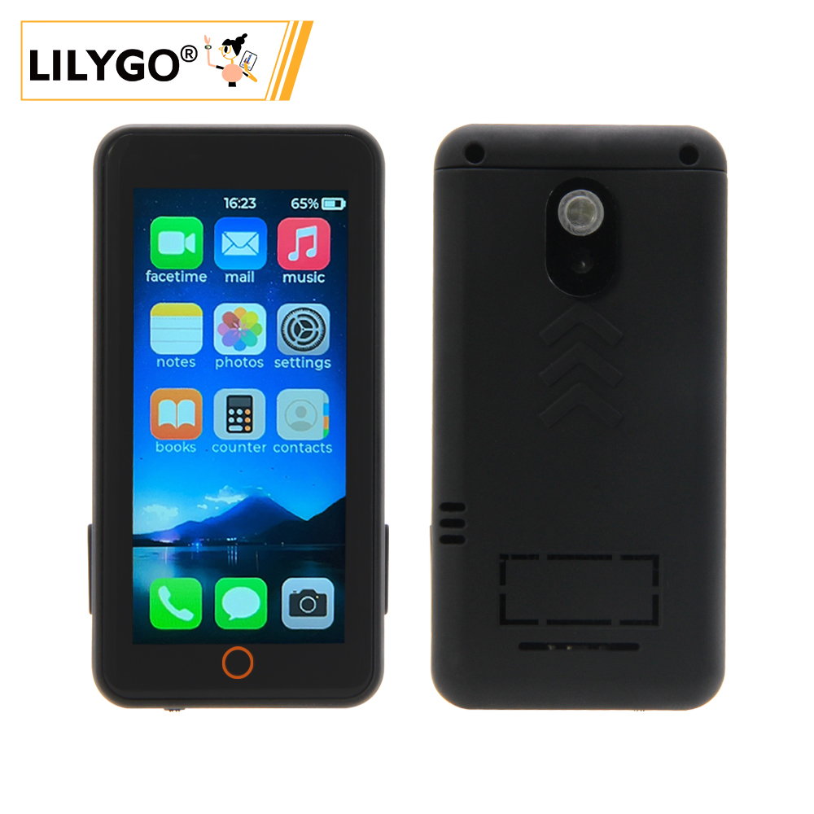

English
EnglishLILYGO T-Display S3 Pro

🚀 Product Overview
T-Display S3 Pro is a high‑performance development board based on the ESP32‑S3, featuring a 2.2‑inch 222×480 full‑color IPS display, capacitive touch, camera expansion, USB OTG, and a variety of peripherals. It integrates the SY6970 power management IC, supporting Li‑ion battery charging and power path management. Onboard peripherals include a TF card slot, ambient light sensor, and motion sensor, making it suitable for smart home applications, portable devices, multimedia projects, and more. The latest V1.1 version uses a constant‑current backlight driver for improved display stability.
Key Features
- ✅ High‑Performance MCU: ESP32‑S3R8 dual‑core LX7 processor, 16MB Flash + 8MB OPI PSRAM
- ✅ Bright IPS Display: 2.2‑inch, 222×480 resolution, wide viewing angle
- ✅ Capacitive Touch: CST816S touch controller, gesture recognition supported
- ✅ Rich Peripherals: Camera interface, TF card slot, ambient light sensor, motion sensor (MPU9250 / MPU6050)
- ✅ Power Management: SY6970 with 1.5A charging current, power path management, and OTG output
- ✅ Expansion Interfaces: 2×13 dual‑row header, STEMMA QT / QWIIC I²C connector
- ✅ Wireless Connectivity: 2.4GHz Wi‑Fi & Bluetooth 5 (LE)
📊 Hardware Specifications
| Item | Specification |
|---|---|
| MCU | ESP32‑S3R8 (dual‑core LX7, 240MHz) |
| Flash | 16MB |
| PSRAM | 8MB (OPI PSRAM) |
| Display | 2.2‑inch IPS, resolution 222×480, driver ST7789V2 |
| Touch | Capacitive touch CST816S (I²C address 0x15) |
| Power Management | SY6970 (1.5A charging, power path, OTG output) |
| Sensors | LTR553 ambient light / proximity sensor (I²C address 0x23) |
| Motion Sensor | Optional MPU9250 / MPU6050 |
| Storage Expansion | TF card slot (SPI) |
| Wireless | 2.4GHz Wi‑Fi 802.11 b/g/n + Bluetooth 5 (LE) |
| USB | 1 × USB‑C (OTG capable) |
| Expansion Interfaces | 2×13 dual‑row header, camera connector (DVP), STEMMA QT / QWIIC (I²C) |
| Buttons | RESET + BOOT |
| Mounting Holes | 4 × 2mm |
| Dimensions | 56.5 × 56.5 × 9.6 mm |
🔄 Version History
| Version | Release Date | Description |
|---|---|---|
| T-Display-S3-Pro V1.0 | 2023‑08‑01 | Initial version, PWM backlight |
| T-Display-S3-Pro V1.1 | 2023‑11‑01 | Upgraded to constant‑current backlight driver, USB‑C port marked V1.1 |
🧩 Module Details
1. Main Controller (MCU)
- Chip: ESP32‑S3R8
- Flash: 16MB
- PSRAM: 8MB (OPI PSRAM)
- More information: Espressif ESP32‑S3 Datasheet
2. Display
- Size: 2.2‑inch
- Resolution: 222×480
- Type: IPS
- Driver: ST7789V2 (compatible)
- Interface: SPI
- Compatible Libraries: TFT_eSPI, Arduino_GFX
3. Touch
- Type: Capacitive touch
- Controller: CST816S
- Interface: I²C (address 0x15)
4. Power Management
- IC: SY6970
- Charge Current: Up to 1.5A
- Battery Type: Single‑cell Li‑ion (3.7V~4.2V)
- Features: Power path management, OTG output, physical switch to disconnect battery
5. Sensors
- Ambient Light / Proximity: LTR553 (I²C address 0x23)
- Motion: MPU9250 / MPU6050 (optional, depends on version)
6. Expansion Interfaces
- Camera: DVP interface (supports OV2640 / OV5640)
- TF Card: SPI interface
- USB‑C: Supports OTG (5V 500mA output)
- GPIO: 2×13 dual‑row header
- I²C: STEMMA QT / QWIIC connector
🔌 Pinout Diagrams


🚀 Quick Start

Supported Development Environments
- PlatformIO
- Arduino IDE
- ESP‑IDF
- MicroPython (community support)
Example Programs
| Example | PlatformIO | Arduino | Description |
|---|---|---|---|
| Factory | ✓ | ✓ | Factory comprehensive test |
| TFT_eSPI_Simple | ✓ | ✓ | Basic TFT_eSPI graphics |
| AdjustBacklight | ✓ | ✓ | Backlight adjustment (V1.0 vs V1.1) |
| PMU_Example | ✓ | ✓ | Power management configuration & battery info |
| USB_HID_Example | ✓ | ✓ | USB HID and OTG functionality |
| CameraShield | ✓ | ✓ | Using camera expansion board |
| Cellphone | ✓ | ✓ | Camera & gallery (requires TF card) |
More examples can be found in the GitHub repository.
PlatformIO Quick Start
- Install Visual Studio Code and open it.
- In the Extensions view, search for “PlatformIO IDE” and install it.
- Clone the project:
git clone https://github.com/Xinyuan-LilyGO/T-Display-S3-Pro.git - Open the project folder in VS Code.
- Open
platformio.iniand under[platformio]uncomment the desired environment (e.g.default_envs = t-display-s3-pro). - Click the
✔icon at the bottom left to compile,→to upload, and the plug icon to open the serial monitor.
Arduino IDE Quick Start
- Install Arduino IDE.
- Add ESP32 board support:
Go to “File” → “Preferences” → “Additional Boards Manager URLs” and add
https://raw.githubusercontent.com/espressif/arduino-esp32/gh-pages/package_esp32_index.json
Then open “Tools” → “Board” → “Boards Manager”, search for and install ESP32. - Copy all libraries from the project’s
libfolder to your Arduino library folder (e.g.C:\Users\YourName\Documents\Arduino\libraries). - Open an example file (e.g.
examples/TFT_eSPI_Simple/TFT_eSPI_Simple.ino). - In the “Tools” menu, select the following settings:
| Setting | Value |
|---|---|
| Board | ESP32S3 Dev Module |
| Upload Speed | 921600 |
| USB CDC On Boot | Enabled |
| USB DFU On Boot | Disabled |
| CPU Frequency | 240MHz (WiFi) |
| Flash Mode | QIO 80MHz |
| Flash Size | 16MB (128Mb) |
| Partition Scheme | 16M Flash (3MB APP/9.9MB FATFS) |
| PSRAM | OPI PSRAM |
- Select the correct port and click Upload.
📊 Performance Tests (Reference)
| Test Item | Result | Remarks |
|---|---|---|
| Backlight Power (max) | ≈120mA | V1.1 constant‑current driver |
| Charge Current | 1.5A | SY6970 max |
| Touch Response | Normal | Gesture supported |
| Camera Compatibility | OV2640 / OV5640 | Requires expansion board |
| USB OTG Output | 5V 500mA | Needs PMU enable |
❓ Frequently Asked Questions
Q1. I still can’t set up the programming environment after reading the tutorials. What should I do?
A. Please refer to the LilyGo-Document for more detailed instructions.
Q2. Why does my board keep failing to upload?
A. Hold the BOOT button, press the RST button once, release RST while still holding BOOT, then start the upload. This forces the board into download mode.
Q3. How do I distinguish between V1.0 and V1.1 versions?
A. Look for “V1.1” printed near the USB‑C port. V1.1 uses a constant‑current backlight driver, so the backlight control method differs; use the corresponding example.
Q4. When no battery is connected, the device reboots repeatedly or the LED flashes?
A. Without a battery, charging should be disabled, otherwise the power supply may become unstable. Call PMU.disableCharge() during initialisation or refer to the PMU_Example.
Q5. Can’t detect USB OTG peripherals?
A. Enable OTG output in your code. Note that while OTG is active, the USB input does not charge the battery.
Q6. The screen stays black or backlight is abnormal?
A. Check that the backlight driver configuration matches your board version (V1.0 uses PWM, V1.1 uses constant‑current). Also ensure the PMU is powered correctly.
📁 Projects & Resources
Related Projects
- T-Display-S3-Pro Schematic
- T-Display-S3-Pro Back Cover Design Files
- T-Display-S3-Pro-MVSRBoard Expansion
- T-Display-S3-Pro-MVSRLora Expansion
Official Resources
Dependent Libraries
- TFT_eSPI
- Arduino_GFX
- XPowersLib (power management)
- SensorLib (sensors)
- TouchLib (touch)
- lvgl (graphics library, optional)
- JPEGDEC (JPEG decoding)
- ESP32_USB_Stream (USB audio streaming)
- ESP32‑audioI2S (audio playback)